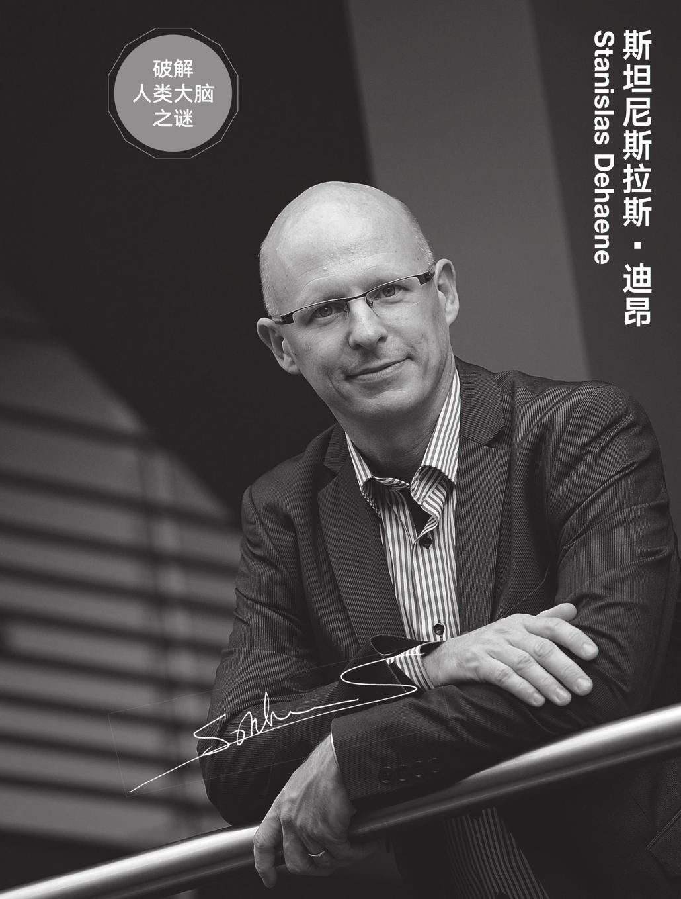
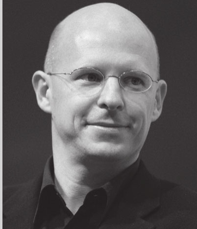
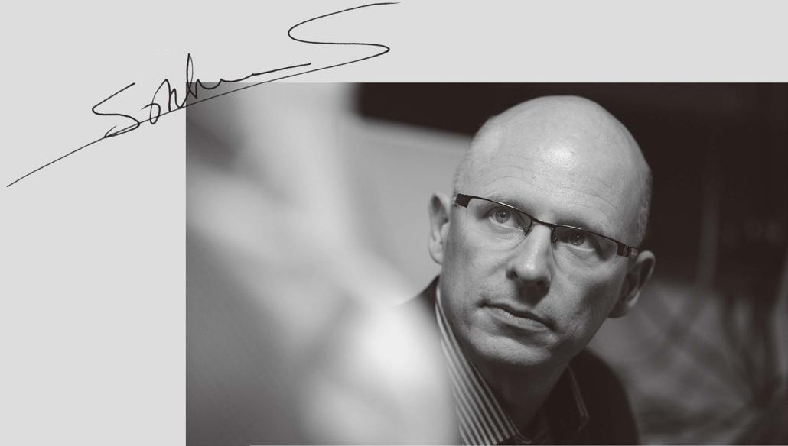
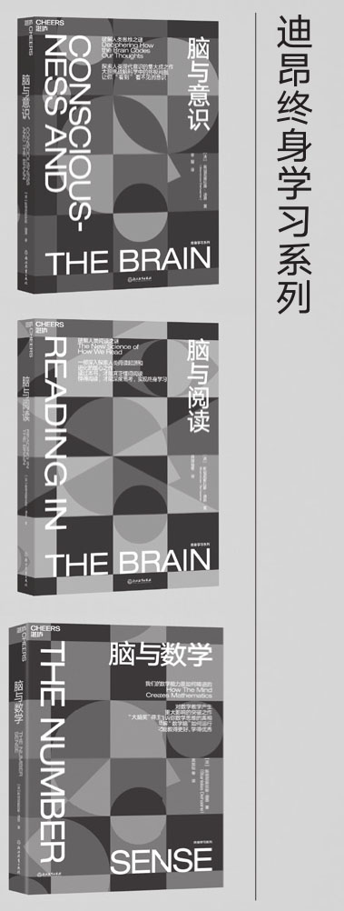

大脑是目前人类发现的最复杂的结构，是除宇宙之外人类最大的未解之谜，宛若研究领域最闪耀的一顶王冠。而王冠之上那颗璀璨的明珠，则要属意识研究——它如此令人着迷，如此深不可测，充满挑战性，吸引着全世界所有科学和脑研究领域的巨擘的目光，他们也正为探究人类意识之谜做着卓越贡献。
在他们之中，作为全世界最有影响力的认知神经科学家之一，斯坦尼斯拉斯·迪昂厥功至伟。
迪昂是目前欧洲脑科学研究领域的领头人、法兰西学院实验认知心理学教授、著名认知神经科学家，其研究涉及脑与意识、数学、阅读等多个领域，均取得了令世人瞩目的成果，比如，他通过实验在大脑中发现了主观意识的客观标志，让人们能真正“看见”意识。他已在《自然》《科学》等国际权威杂志上发表300多篇文章，是脑科学及数学认知领域公认的专家。
迪昂是一位世界级的科学家，他开创了一系列研究意识的实验，这些实验彻底改变了这一领域，并为我们带来了第一个直接研究意识生物学的方法。
埃里克·坎德尔
Eric Kandel
2000年诺贝尔生理学或医学奖获得者
由于为人类大脑领域的研究做出了重要贡献，2014年，迪昂同其他两位科学家共同获得了有“神经科学界诺贝尔奖”之称的“大脑奖”。该奖项每年评选一次，奖金100万欧元，是世界上影响力最大、最有分量的脑科学研究奖项。迪昂实至名归。
其实，迪昂最初所学的专业并非认知神经科学，而是数学。他本科毕业于巴黎高等师范学院数学专业，又获得巴黎第六大学应用数学及计算机科学专业硕士学位。
后来，受让-皮埃尔·尚热（Jean-Pierre Changeux）在神经科学方面的研究吸引，他将研究方向转向了心理学及神经科学，跟随认知神经科学创始人乔治·米勒、转换生成语法理论创始人诺姆·乔姆斯基、认知发展理论创始人让·皮亚杰三位大师的学生杰柯·梅勒学习，获得博士学位，可谓传承了三位“师爷”的智慧结晶。

迪昂在他涉及的各研究领域都是先驱研究者。
在数学认知领域，迪昂是公认的专家，他的《脑与数学》一书被哈佛大学等著名大学用作专业教材。迪昂也是语言及阅读领域的专家，他在《脑与阅读》一书中提出关于人类阅读能力的新理论，有力地驳斥了大脑具有无限学习能力的传统观点；另外，他在阅读障碍及阅读学习方面取得的研究成果，对教育领域也同样具有重要参考价值。在另一本佳作《脑与意识》一书中，迪昂总结了近20年来关于意识与思维的前沿研究成果，翻开了脑科学领域研究的新篇章。
迪昂的科学探索还在继续，他将不断挑战更难、更复杂的问题，破解大脑中更多未被开发或未被探索的秘密，进一步帮助人类拓宽视野，为解开人类大脑之谜谱写新篇章。
